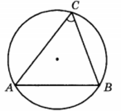

Для успешного решения задач такого типа необходимо уметь выполнять действия с геометрическими фигурами, векторами и координатами
1. В треугольнике со сторонами 10 и 2 проведены высоты к этим сторонам. Высота, проведённая к первой из этих сторон, равна 3. Чему равна высота, проведённая ко второй стороне?
Ответ
15
2. Основания равнобедренной трапеции равны 120 и 50. Центр окружности, описанной около трапеции, лежит внутри трапеции, а радиус окружности равен 65. Найдите высоту трапеции.
Ответ
85
3. Найдите хорду, на которую опирается угол 60°, санный в окружность радиуса √3.

Ответ
3